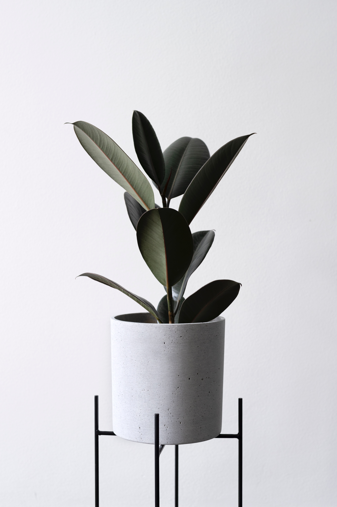

p의경우에는 한 단락 띄우기 p대신 br을 써줘도 된다 br은 단독 의로 쓰이며 한달락 띄우기가 아닌 줄 바꿈 이다. strong의 경우에는 사이에있는 언어를 강조 시킨다. u는 under bar로 밑줄 잘안씀
css언어에서 p를 시작할때 갈 호 닫기전 style="margin-top:45px;"를 입력하면 p가 단락을 띄우는 용도로 쓰이는데 한 달락의 크기를정해 줄 수 있다. 근데 요기선 잘 안배움
다음을로 이미지 넣기 jpg 이미지를 넣고 싶은 곳에img를 태그에 넣고 태그를 닫기전 scr="넣고 싶은 이미지.jpg"를 넣으면 지정된 이미지가 들어간다. 크기 조정은 width 폭이라는 뜻인데 width="원하는 크기%" 를 치고 태글를 닫아 주면 이미지를 삽입할 수 있다. 요기서 태그 img를 제외한 scr( sorce의 줄임말 ) 과 width는 attribute 즉 속성이다.
html에서 부모 태그, 자식 태그가 있다. 부모자식 태그는 서로 위치가 바뀔 수 있고 항상 같이 오는 부모 자식 태그가 있다 목차를 만들어 보며 알아 볼 것이다. 목록은 영어로list 즉 li로 사 용 태그에 li 넣으면 됨